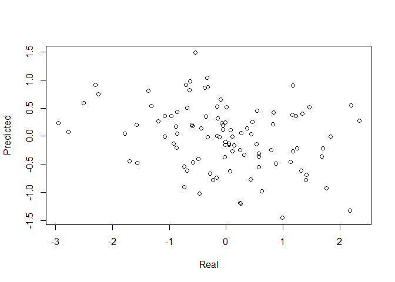

The cpmr package is specifically designed for the analysis of the connectome predictive modeling (CPM) method in R. This package relies on Rfast to do row oriented calculation.
Installation
You can install the released version of cpmr from CRAN with:
install.packages("cpmr")Or you can install the development version of cpmr from r-universe with:
install.packages("cpmr", repos = c("https://psychelzh.r-universe.dev", getOption("repos")))Example
It is very simple to use this package. Just shape your connectivity matrix as a subjects by edges matrix, i.e., each row contains the correlation matrix (removed diagonal and duplicated values, e.g., lower triangular data) for each subject, and your behavior data a vector and feed them in cpm() function.
library(cpmr)
withr::local_seed(123)
conmat <- matrix(rnorm(100 * 1000), nrow = 100)
behav <- rnorm(100)
res <- cpm(conmat, behav, kfolds = 10)
plot(res$real, res$pred[, "both"], xlab = "Real", ylab = "Predicted")